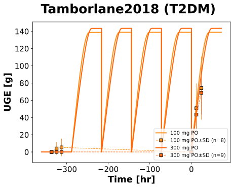
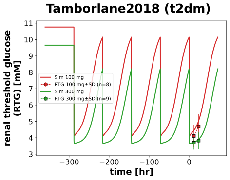

Tamborlane2018
Models
Datasets
- canagliflozin_CAN100: Tamborlane2018_canagliflozin_CAN100.tsv
- canagliflozin_CAN300: Tamborlane2018_canagliflozin_CAN300.tsv
- renal_threshold_CAN100: Tamborlane2018_renal_threshold_CAN100.tsv
- renal_threshold_CAN300: Tamborlane2018_renal_threshold_CAN300.tsv
- glucose_cumulative_amount_CAN100: Tamborlane2018_glucose_cumulative_amount_CAN100.tsv
- glucose_cumulative_amount_CAN300: Tamborlane2018_glucose_cumulative_amount_CAN300.tsv
Figures
- canagliflozin plasma: Tamborlane2018_canagliflozin plasma.svg
- Fig_uge: Tamborlane2018_Fig_uge.svg
- Fig_rtg: Tamborlane2018_Fig_rtg.svg
{kind=link}
{kind=link}
canagliflozin plasma

|
Fig_uge
|
 |
Fig_rtg
|
 |
Code
../../../../experiments/studies/tamborlane2018.py
from typing import Dict
from sbmlsim.data import DataSet, load_pkdb_dataframe
from sbmlsim.fit import FitMapping, FitData
from sbmlutils.console import console
from pkdb_models.models.canagliflozin.experiments.base_experiment import (
CanagliflozinSimulationExperiment,
)
from pkdb_models.models.canagliflozin.experiments.metadata import Tissue, Route, Dosing, ApplicationForm, Health, \
Fasting, CanagliflozinMappingMetaData
from sbmlsim.plot import Axis, Figure
from sbmlsim.simulation import Timecourse, TimecourseSim
from pkdb_models.models.canagliflozin.helpers import run_experiments
class Tamborlane2018(CanagliflozinSimulationExperiment):
"""Simulation experiment of Tamborlane2018."""
doses = [100, 300]
interventions = ["CAN100", "CAN300"]
bodyweights = {100: 116.8, 300: 98.6} # [kg]
fpg = {100: 134, 300: 106.3} # mM (healthy)
gfr = {100: 135.8, 300: 161.3} # [ml/min/1.73*m^2]
def datasets(self) -> Dict[str, DataSet]:
dsets = {}
for fig_id in ["Fig1", "Fig3", "Fig4"]:
df = load_pkdb_dataframe(f"{self.sid}_{fig_id}", data_path=self.data_path)
for label, df_label in df.groupby("label"):
dset = DataSet.from_df(df_label, self.ureg)
# unit conversion to mole/l
if label.startswith("canagliflozin_"):
dset.unit_conversion("mean", 1 / self.Mr.can)
elif label.startswith("renal_threshold"):
dset.unit_conversion("mean", 1 / self.Mr.glc)
dsets[f"{label}"] = dset
# console.print(dsets)
# console.print(dsets.keys())
return dsets
def simulations(self) -> Dict[str, TimecourseSim]:
Q_ = self.Q_
tcsims = {}
# multiple dose
for dose in self.doses:
tc0 = Timecourse(
start=0,
end=72 * 60, # [min]
steps=500,
changes={
**self.default_changes(),
"BW": Q_(self.bodyweights[dose], "kg"),
"[KI__fpg]": Q_(self.fpg[dose] / 18, "mM"),
"KI__f_renal_function": Q_(self.gfr[dose] / 100, "dimensionless"), # [0, 1] <=> [0, 100] gfr
"PODOSE_can": Q_(0, "mg"),
},
)
tc1 = Timecourse(
start=0,
end=72 * 60, # [min]
steps=500,
changes={
"BW": Q_(self.bodyweights[dose], "kg"),
"[KI__fpg]": Q_(self.fpg[dose] / 18, "mM"),
"KI__f_renal_function": Q_(self.gfr[dose] / 100, "dimensionless"), # [0, 1] <=> [0, 100] gfr
"KI__glc_urine": Q_(0, "mmole"), # reset UGE
"PODOSE_can": Q_(dose, "mg"),
},
)
tc2 = Timecourse(
start=0,
end=72 * 60, # [min]
steps=500,
changes={
"BW": Q_(self.bodyweights[dose], "kg"),
"[KI__fpg]": Q_(self.fpg[dose] / 18, "mM"),
"KI__f_renal_function": Q_(self.gfr[dose] / 100, "dimensionless"), # [0, 1] <=> [0, 100] gfr
"KI__glc_urine": Q_(0, "mmole"), # reset UGE
"PODOSE_can": Q_(dose, "mg"),
},
)
tcsims[f"po_can{dose}_multi"] = TimecourseSim(
[tc0] + [tc1 for _ in range(4)] + [tc2],
time_offset=-5 * 72 * 60,
)
return tcsims
def fit_mappings(self) -> Dict[str, FitMapping]:
mappings = {}
for name, sid in [
('canagliflozin', '[Cve_can]'),
('glucose_cumulative_amount', 'KI__UGE'),
('renal_threshold', 'KI__RTG'),
]:
for dose in self.doses:
mappings[f"task_po_can{dose}_{name}"] = FitMapping(
self,
reference=FitData(
self,
dataset=f"{name}_CAN{dose}",
xid="time",
yid="mean",
yid_sd="mean_sd",
count="count",
),
observable=FitData(
self, task=f"task_po_can{dose}_multi", xid="time", yid=sid,
),
metadata=CanagliflozinMappingMetaData(
tissue=Tissue.URINE if "cumulative" in name else Tissue.PLASMA,
route=Route.PO,
application_form=ApplicationForm.TABLET,
dosing=Dosing.SINGLE,
health=Health.T2DM,
fasting=Fasting.FASTED,
),
)
# console.print(mappings)
return mappings
def figures(self) -> Dict[str, Figure]:
return {
**self.figure_plasma(),
**self.figure_uge(),
**self.figure_rtg()
}
def figure_plasma(self) -> Dict[str, Figure]:
fig = Figure(
experiment=self,
sid="canagliflozin plasma",
name=f"{self.__class__.__name__} (T2DM)",
)
plots = fig.create_plots(xaxis=Axis(self.label_time, unit=self.unit_time), legend=True)
plots[0].set_yaxis(self.label_can, unit=self.unit_can)
for dose in self.doses:
# simulation
plots[0].add_data(
task=f"task_po_can{dose}_multi",
xid="time",
yid=f"[Cve_can]",
label=f"{dose} mg PO",
color=self.dose_colors[dose],
)
# data
plots[0].add_data(
dataset=f"canagliflozin_CAN{dose}",
xid="time",
yid="mean",
yid_sd="mean_sd",
count="count",
label=f"{dose} mg PO",
color=self.dose_colors[dose],
)
return {
fig.sid: fig,
}
def figure_uge(self) -> Dict[str, Figure]:
fig = Figure(
experiment=self,
sid="Fig_uge",
name=f"{self.__class__.__name__} (T2DM)",
)
plots = fig.create_plots(xaxis=Axis(self.label_time, unit=self.unit_time), legend=True)
plots[0].set_yaxis(self.label_uge, unit=self.unit_uge)
for dose in self.doses:
# simulation
plots[0].add_data(
task=f"task_po_can{dose}_multi",
xid="time",
yid=f"KI__UGE",
label=f"{dose} mg PO",
color=self.dose_colors[dose],
)
# data
plots[0].add_data(
dataset=f"glucose_cumulative_amount_CAN{dose}",
xid="time",
yid="mean",
yid_sd="mean_sd",
count="count",
label=f"{dose} mg PO",
color=self.dose_colors[dose],
)
return {
fig.sid: fig,
}
def figure_rtg(self) -> Dict[str, Figure]:
fig = Figure(
experiment=self,
sid="Fig_rtg",
name=f"{self.__class__.__name__} (T2DM)",
)
plots = fig.create_plots(xaxis=Axis(self.label_time, unit=self.unit_time), legend=True)
plots[0].set_yaxis(self.label_rtg, unit=self.unit_rtg)
for dose in self.doses:
# simulation
plots[0].add_data(
task=f"task_po_can{dose}_multi",
xid="time",
yid=f"KI__RTG",
label=f"{dose} mg PO",
color=self.dose_colors[dose],
)
# data
plots[0].add_data(
dataset=f"renal_threshold_CAN{dose}",
xid="time",
yid="mean",
yid_sd="mean_sd",
count="count",
label=f"{dose} mg PO",
color=self.dose_colors[dose],
)
return {
fig.sid: fig,
}
if __name__ == "__main__":
run_experiments(Tamborlane2018, output_dir=Tamborlane2018.__name__)